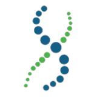
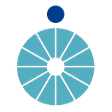

About
Bioinformatics educator and computational biologist working across microbial genomics, multi-omics integration and applied artificial intelligence.
Hover over or tap a topic to learn more.
Expertise
Bioinformatics & NGS Data Analysis
Workflows for genomic, transcriptomic, proteomic and multi-omics data.
Microbial Genomics & AMR
Comparative genomics, pathogen surveillance and molecular epidemiology.
HPC & Database Management
Server administration, scalable workflows and data management.
Algorithm Development & Programming
Reproducible pipelines in Bash, R, Perl and Python.
Precision Medicine, Biomarkers & Drug Development
Computational biomarker discovery and integrative analysis for translational research.
Appointments
Current: academic & research
- Senior Lecturer2026 – PresentDepartment of Biomedical Sciences, Jeffrey Cheah Sunway Medical School, Faculty of Medical and Life Sciences, Sunway University, Malaysia
- Adjunct Professor (Academic Fellow)2025 – PresentFaculty of Fisheries and Marine, Airlangga University, Indonesia
- Member, Zhejiang-Malaysia Joint Laboratory on Rare Medicinal Resources2026 – PresentWenzhou-Kean University, China
Current: industry & advisory

Key Opinion Leader (Bioinformatics, AI and Machine Learning)2024 – PresentArcadia Life Sciences Sdn. Bhd., Malaysia
Previous
- Senior Lecturer2024 – 2025Faculty of Health and Life Sciences, Management and Science University, Malaysia
- Faculty Research Group Leader2024 – 2025Computational Approach & Infectious Disease Research Group, Management and Science University, Malaysia
- Visiting Lecturer2025Joint Institute of MSU, Henan University of Chinese Medicine, China
- International Research Scholar2019 – 2024Research Institute, National Center for Global Health and Medicine, Japan
- Research Officer2017 – 2019UKM Medical Molecular Biology Institute, The National University of Malaysia, Malaysia
Education
- PhD in Medical Science (Bioinformatics)2020 – 2024The University of Tokyo, Japan
Thesis: Deciphering the genetic landscape of obesity using a data-driven approach
- Master of Dental Science (MDSc) in Bioinformatics2013 – 2015Faculty of Dentistry, University of Malaya, Malaysia
Thesis: Genomic and comparative analyses of Fusobacterium nucleatum W1481, a possible novel subspecies
- BSc (Hons) in Bioinformatics2009 – 2012The National University of Malaysia, Malaysia
Thesis: Functional interpretation of BPSL0829 from Burkholderia pseudomallei using a comparative modelling approach
Publications
Grouped by theme. Click a theme to expand. Full list on Google Scholar and ORCID.
AI, machine learning & responsible bioinformatics 5
- 2026Ang, M. Y., et al. Trustworthy agentic AI in bioinformatics: From workflow automation to traceable and validated biological inference. Biology, 15(17), 1537. https://doi.org/10.3390/biology15171537
- 2026Ang, M. Y., et al. AI-guided long non-coding RNA target discovery for precision medicine: Integrating GWAS, multi-omics, experimental validation, and RNA therapeutics. Biomedicines, 14(8), 1722. https://doi.org/10.3390/biomedicines14081722
- 2026Zhou, Z., et al. Deep learning in tumour genomics: From multi-omics integration to precision oncology. Open Biology, 16(7), 260117. https://doi.org/10.1098/rsob.260117
- 2026Ang, M. Y., et al. From GWAS signals to molecular mechanisms: Explainable AI for causal gene prioritization and biomolecular target interpretation. Biomolecules, 16(7), 1029. https://doi.org/10.3390/biom16071029
- 2026Ang, M. Y., et al. Responsible use of large language models in microbial genomics and bioinformatics: A life-science framework for reliability, reproducibility, and risk-aware interpretation. Life, 16(6), 1032. https://doi.org/10.3390/life16061032
Genomic epidemiology & antimicrobial resistance 7
- 2026Ang, M. Y., et al. Phage genomics and bioinformatics in therapeutic development: Evidence limits, validation gates, and translational decision-making. Pharmaceuticals, 19(9), 1465. https://doi.org/10.3390/ph19091465
- 2025Ang, M. Y., et al. Misidentification of Staphylococcus epidermidis M15_2005 in a diagnostic microbiology laboratory: Whole genome sequencing as a confirmatory tool? Malaysian Journal of Microbiology, 21(4), 442–446. https://doi.org/10.21161/mjm.240708
- 2025Chen, L., et al. Squama Manitis extract exhibits broad-spectrum antibacterial activity through energy and DNA disruption mechanisms. Biology, 14(8), 949. https://doi.org/10.3390/biology14080949
- 2024Lam, S. D., et al. AMRColab: A user-friendly antimicrobial resistance detection and visualization tool. Microbial Genomics, 10(10), 001308. https://doi.org/10.1099/mgen.0.001308
- 2024Farook, N. A. M., et al. Desiccation tolerance and reduced antibiotic resistance: Key drivers in ST239-III to ST22-IV MRSA clonal replacement at a Malaysian teaching hospital. International Journal of Medical Microbiology, 317, 151638. https://doi.org/10.1016/j.ijmm.2024.151638
- 2022Ang, M. Y., et al. Draft genome sequences of four methicillin-resistant Staphylococcus aureus strains (M080_2017, M106_2017, M181_2017, and M191_2017), isolated from a Malaysian teaching hospital. Microbiology Resource Announcements, 11(12), e00867-22. https://doi.org/10.1128/mra.00867-22
- 2022Farook, N. A. M., et al. Diversity and dissemination of methicillin-resistant Staphylococcus aureus (MRSA) genotypes in Southeast Asia. Tropical Medicine and Infectious Disease, 7(12), 438. https://doi.org/10.3390/tropicalmed7120438
Comparative & functional genomics of pathogens 6
- 2021Osman, M. A., et al. Parvimonas micra, Peptostreptococcus stomatis, Fusobacterium nucleatum and Akkermansia muciniphila as a four-bacteria biomarker panel of colorectal cancer. Scientific Reports, 11(1), 2925. https://doi.org/10.1038/s41598-021-82465-0
- 2016Choo, S. W., et al. Comparative genomic analysis reveals a possible novel non-tuberculous Mycobacterium species with high pathogenic potential. PLOS ONE, 11(4), e0150413. https://doi.org/10.1371/journal.pone.0150413
- 2016Ang, M. Y., et al. Comparative genome analysis of Fusobacterium nucleatum. Genome Biology and Evolution, 8(9), 2928–2938. https://doi.org/10.1093/gbe/evw199
- 2014Ang, M. Y., et al. Genome sequence of Fusobacterium nucleatum strain W1481, a possible new subspecies isolated from a periodontal pocket. Genome Announcements, 2(1), e00009-14. https://doi.org/10.1128/genomea.00009-14
- 2013Ang, M. Y., et al. Genome sequence of Parvimonas micra strain A293, isolated from an abdominal abscess from a patient in the United Kingdom. Genome Announcements, 1(6), e01025-13. https://doi.org/10.1128/genomea.01025-13
- 2013Tan, J. L., et al. First whole-genome sequence of Mycobacterium iranicum, a newly reported mycobacterial species. Genome Announcements, 1(5), e00732-13. https://doi.org/10.1128/genomea.00732-13
Multi-omics, precision medicine & systems biology 12
- 2026Ang, M. Y., et al. The Nutri-Exposome Intelligence Framework: Integrating multi-omics, machine learning, and digital nutrition for precision chronic disease prevention. Nutrients, 18(11), 1826. https://doi.org/10.3390/nu18111826
- 2026Liu, Z., et al. Gut microbiota in colorectal cancer: Mechanistic insights, clinical strategies, and a regional perspective with a focus on Sichuan, China. Cancers, 18(11), 1693. https://doi.org/10.3390/cancers18111693
- 2026Liu, Z., et al. Multi-omics integration in colorectal cancer: From molecular insights to precision oncology. Cancers, 18(10), 1504. https://doi.org/10.3390/cancers18101504
- 2026Ang, M. Y., et al. Mechanistic systems biology of high-salinity fermented seafood: Multi-omics integration for microbial safety and quality prediction. Biology, 15(10), 772. https://doi.org/10.3390/biology15100772
- 2026Ang, M. Y., et al. The computational revolution in natural product research: A data-driven roadmap for next-generation drug development. Biology, 15(8), 632. https://doi.org/10.3390/biology15080632
- 2026Ang, M. Y., et al. Environmentally driven precision neurology: A neurogenomic perspective. Biology, 15(3), 283. https://doi.org/10.3390/biology15030283
- 2023Ang, M. Y., et al. Deciphering the genetic landscape of obesity: A data-driven approach to identifying plausible causal genes and therapeutic targets. Journal of Human Genetics, 68(12), 823–833. https://doi.org/10.1038/s10038-023-01189-3
- 2023Takeuchi, F., et al. Gene-regulation modules in nonalcoholic fatty liver disease revealed by single-nucleus ATAC-seq. Life Science Alliance, 6(10), e202301988. https://doi.org/10.26508/lsa.202301988
- 2022Takeuchi, F., et al. Transcriptomic response in the heart and kidney to different types of antihypertensive drug administration. Hypertension, 79(2), 413–423. https://doi.org/10.1161/hypertensionaha.121.18026
- 2019Abdul Murad, N. A., et al. Digenic inheritance of heterozygous FANCA and BRCA2 mutations in a VACTERL-H patient. Asian Journal of Medicine and Biomedicine, 3(2), 35–45.
- 2019Ang, M. Y., et al. Proteogenomics: From next-generation sequencing (NGS) and mass spectrometry-based proteomics to precision medicine. Clinica Chimica Acta, 498, 38–46. https://doi.org/10.1016/j.cca.2019.08.010
- 2019Low, T. Y., et al. Connecting proteomics to next-generation sequencing: Proteogenomics and its current applications in biology. Proteomics, 19(10), e1800235. https://doi.org/10.1002/pmic.201800235
Bioinformatics platforms & genomic databases 9
- 2016Zheng, W., et al. NeisseriaBase: A specialised Neisseria genomic resource and analysis platform. PeerJ, 4, e1698. https://doi.org/10.7717/peerj.1698
- 2015Choo, S. W., et al. MycoCAP: Mycobacterium Comparative Analysis Platform. Scientific Reports, 5, 18227. https://doi.org/10.1038/srep18227
- 2015Tan, S. Y., et al. YersiniaBase: A genomic resource and analysis platform for comparative analysis of Yersinia. BMC Bioinformatics, 16, 9. https://doi.org/10.1186/s12859-014-0422-y
- 2015Tan, M. F., et al. Development of ListeriaBase and comparative analysis of Listeria monocytogenes. BMC Genomics, 16, 755. https://doi.org/10.1186/s12864-015-1959-5
- 2014Ang, M. Y., et al. FusoBase: An online Fusobacterium comparative genomic analysis platform. Database, 2014, bau082. https://doi.org/10.1093/database/bau082
- 2014Choo, S. W., et al. HelicoBase: A Helicobacter genomic resource and analysis platform. BMC Genomics, 15, 600. https://doi.org/10.1186/1471-2164-15-600
- 2014Heydari, H., et al. StaphyloBase: A specialized genomic resource for the staphylococcal research community. Database, 2014, bau010. https://doi.org/10.1093/database/bau010
- 2014Choo, S. W., et al. VibrioBase: A model for next-generation genome and annotation database development. The Scientific World Journal, 2014, 569324. https://doi.org/10.1155/2014/569324
- 2014Heydari, H., et al. CoryneBase: Corynebacterium genomic resources and analysis tools at your fingertips. PLOS ONE, 9(1), e86318. https://doi.org/10.1371/journal.pone.0086318
Environmental microbiome, conservation & public health 3
- 2026Ang, M. Y., et al. 16S rRNA gene sequencing baseline for the atmospheric microbiome of traffic-impacted urban centers in the Klang Valley, Malaysia. Microbiology Resource Announcements, 15(7), e00477-26. https://doi.org/10.1128/mra.00477-26
- 2026Aljarousha, M., et al. Depression, anxiety, stress, and dry eye disease among Gazan undergraduate health sciences and nursing students: A structural equation modeling study. Contact Lens and Anterior Eye, 49(1), 102504. https://doi.org/10.1016/j.clae.2025.102504
- 2022Choo, S. W., et al. A collective statement in support of saving pangolins. Science of the Total Environment, 824, 153666. https://doi.org/10.1016/j.scitotenv.2022.153666
Book chapters 3
- 2027Feisal, N. A. S., et al. Life cycle assessment on sustainable biorefinery of microalgae. In Applied Phycology (pp. 413–454). Elsevier.
- 2025Abdullah-Zawawi, M.-R., et al. Computational methods for disentangling host–pathogen interaction landscapes. In Encyclopedia of Bioinformatics and Computational Biology (pp. 450–462). Elsevier. https://doi.org/10.1016/b978-0-323-95502-7.00257-8
- 2022Tan, S. C., et al. Management of next-generation sequencing in precision medicine. In Regionalized Management of Medicine (Translational Bioinformatics, pp. 149–176). Springer. https://doi.org/10.1007/978-981-16-7893-6_11
Preprints 1
- 2024Mendes, C. I., et al. hAMRonization: Enhancing antimicrobial resistance prediction using the PHA4GE AMR detection specification and tooling. bioRxiv. https://doi.org/10.1101/2024.03.07.583950
Software & Databases
AMRColab
No-code antimicrobial resistance detection and visualization in Google Colab.
hAMRonization
Standardized AMR gene detection specification and tooling, developed through PHA4GE.
Bacterial genomic resources
Co-developer of comparative genomic databases and analysis platforms for bacterial pathogens. Select a database to read its paper on PubMed.
Grants, Fellowships & Scholarships
Research grants
-
Collaborative Regional Research Programme (CRRP), FY2026USD 118,805Team member
2026 – 2027
Asia-Pacific Network for Global Change Research (APN), Japan
Airborne microbiome monitoring and climate-driven risk assessment for human health in Southeast Asia (Malaysia, Indonesia, Thailand).
-
PHA4GE AMR Sub-Grant (AMR-SG-02; Team Malaysia)USD 20,000Team member
2021 – 2022
Public Health Alliance for Genomic Epidemiology (PHA4GE), South Africa
Implementation of hAMRonization for standardized AMR genome analysis, leading to the AMRColab platform.
-
MSU Industrial Collaboration Grant (MICG)MYR 20,000Principal Investigator
2025 – 2027
Management and Science University, Malaysia
Core genome diversity and molecular epidemiology of methicillin-resistant Staphylococcus aureus in Malaysia.
Fellowships & scholarships

Japanese Government (MEXT) Scholarship2019 – 2024Fully funded PhD, The University of Tokyo- University of Malaya HIR-GRAS Scholarship2013 – 2015Fully funded MDSc, University of Malaya
- Malaysia Public Service Department (JPA) Scholarship2009 – 2012Fully funded BSc, The National University of Malaysia
Teaching & Supervision
Courses taught
Sunway University
- AI Foundation and Applications
- Basic Biostatistics
- Bioinformatics
- Current Topics in Biomedical Sciences
- Research Methodology
Management and Science University
- Bioinformatics II
- Bioinformatics Data Processing
- Sequence and Structure Analysis
- Systems Biology
Henan University of Chinese Medicine
- Bioinformatics for Pharmacy
Airlangga University (invited adjunct)
- Bioinformatics Approaches in Macroalgal and Microalgal Biotechnology
- Multi-Omics Approaches for Bioprospecting Secondary Metabolites in Macroalgae and Microalgae
- Systems Biology Approaches for Understanding Metabolism in Macroalgae and Microalgae
Student supervision
- Liu ZuoliangPhD2024 – PresentCo-supervisor · Management and Science University, Malaysia
Comprehensive analysis of colorectal cancer pathways in patients from Sichuan, China using transcriptomics and metagenomics approaches.
- Arun RajBachelor's2026 · CompletedMain supervisor · Sunway University, Malaysia
Comparative genomic analysis of food-borne and clinical Staphylococcus aureus to assess zoonotic potential.
- Bhavyasri RajeshBachelor's2026 · CompletedMain supervisor · Sunway University, Malaysia
Comparative genomics of Staphylococcus aureus USA300 vs. commensal lineages to identify fitness and virulence determinants.
- Najla Ali Ahmed Al-HomeidyBachelor's2026 · CompletedMain supervisor · Sunway University, Malaysia
A comparative genomic study of multidrug-resistance clusters across Staphylococcus aureus clonal complexes.
- Nandinisree Thevar A/P RajaBachelor's2025 · CompletedMain supervisor · Management and Science University, Malaysia
Comparative genomics of Staphylococcus aureus. Report
- Zhang HongjiBachelor's2025 · CompletedMain supervisor · Henan University of Chinese Medicine, China
Attitudes of older Chinese adults toward Lily (Lilium spp.) use in Alzheimer's disease management.
Talks & Workshops
Talks & presentations
- Application of Bioinformatics Approaches in MicrobiologyInvited lectureSep 2026Airlangga University, Indonesia (online)
- Let’s Talk ScienceInvited speakerJun 2026Malaysia Genome and Vaccine Institute (MGVI), NIBM
- NCGMRI Summer Retreat SymposiumPosterJul 2023Japan
- 67th Annual Meeting of the Japan Society of Human GeneticsPosterDec 2022Japan
Show 4 earlierShow fewer
- RECOMB/ISCB Conference on Regulatory & Systems Genomics (RSGDREAM 2022)PosterNov 2022United States (online)
- International Symposium on Bioinformatics (InSyB)PosterDec 2018Malaysia
- International Digestive Disease Forum (IDDF) 20182 abstractsJun 2018Hong Kong · Published in Gut, 67(Suppl 2), A11 and A13
- 2nd Postgraduate Conference on Science and Technology StudiesPosterDec 2013Malaysia
Workshops & training
- Malaysia Microbiome Meeting (MMM) 2026 & Sunway Microbiome Centre (SUMC) Soft LaunchOrganizerOct 2026Sunway University, Malaysia
- Short Course in Applied Genomic Bioinformatics for AMR SurveillanceTrainerJul 2025University of Santo Tomas, Philippines · Malaysia
- MSU Health Science Week 2025OrganizerJul 2025Malaysia
- Short Course in Introduction to Bioinformatics Data Management and ProgrammingTrainer & OrganizerMay 2025Malaysia
- 23rd iMPaCHS SymposiumOrganizerFeb 2025Management and Science University, Malaysia
Show 6 earlierShow fewer
- Short Course in Genomic Analysis and Antimicrobial ResistanceTrainerOct 2024University of the Immaculate Conception, Philippines · Malaysia
- hAMRonization 2.0: A Virtual WorkshopTrainer & OrganizerApr 2023Japan (online)
- hAMRonization: A Virtual WorkshopTrainer & OrganizerApr 2022Japan (online)
- RNA-Seq NGS Data Analysis WorkshopTrainer & OrganizerNov 2018Malaysia
- 8th Regional Conference on Molecular Medicine (RCMM) & 4th National Conference for Cancer ResearchOrganizerSep 2018Malaysia
- 7th Regional Conference on Molecular Medicine (RCMM) & National Conference for Cancer ResearchOrganizerNov 2017Malaysia
Science communication
- Democratising Bioinformatics! Breaking the Bioinformatics Barrier in AMR Genome AnalysisBlog articleNov 2024Microbiology Society · co-authored with the AMRColab team
- Galaxy@UMBI-HPC: The Answer to Omics Big DataNews articleJun 2018UKM Medical Molecular Biology Institute (UMBI) · with Hui-min Neoh
- High Performance Computing (HPC) at UMBI: Providing Researchers with Computing Power for Big Data AnalyticsNews articleAug 2017UKM Medical Molecular Biology Institute (UMBI) · with Zainal Azmir Ramli and A Rahman A Jamal
Service & Memberships
Editorial & peer review
- Editorial Board Member, Scientific ReportsJul 2026 – PresentSpringer Nature
- Editorial Review Board Member, Bioinformatics and Biology InsightsJun 2026 – PresentSAGE Publications
- Peer Reviewer, International Journal of Molecular Sciences2026MDPI
- Peer Reviewer, BMC Genomic Data2026BMC, Springer Nature
Examination
- Chairperson, PhD Proposal DefenceJul 2026Sunway University, Malaysia
- Internal Examiner, Master's Proposal DefenceNov 2025Management and Science University, Malaysia
- Internal Examiner, Final Year Project Proposal PresentationsMay 2025Management and Science University, Malaysia
- Internal Examiner, PhD Proposal DefenceMar 2025Management and Science University, Malaysia
Memberships
- American Society for Microbiology (ASM)United States
- International Society for Computational Biology (ISCB)United States
- Japan Society of Human Genetics (JSHG)Japan
- Malaysian Society of Bioinformatics and Computational Biology (MaSBiC)Malaysia
- Young Scientist Network, Academy of Sciences Malaysia (YSN-ASM)Malaysia